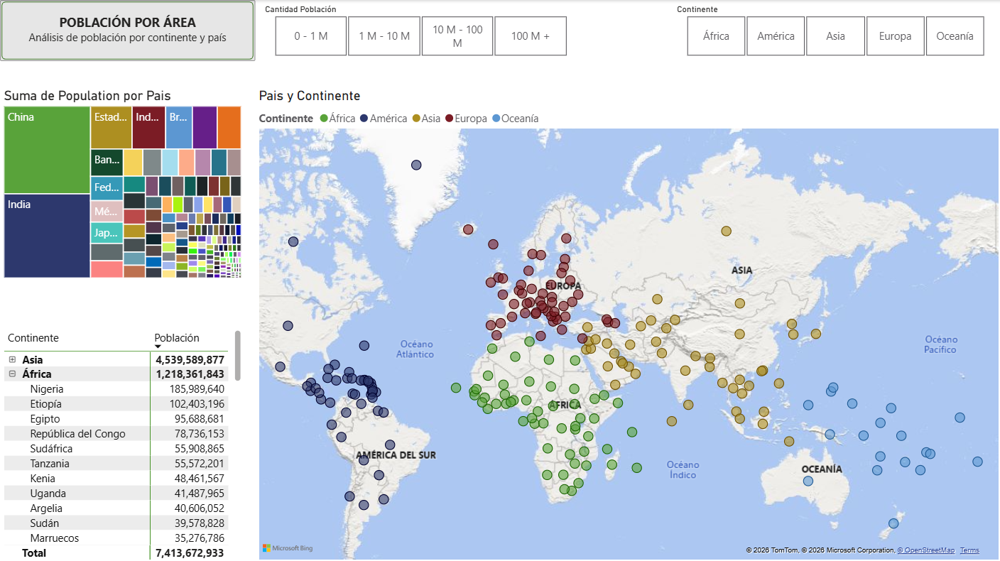
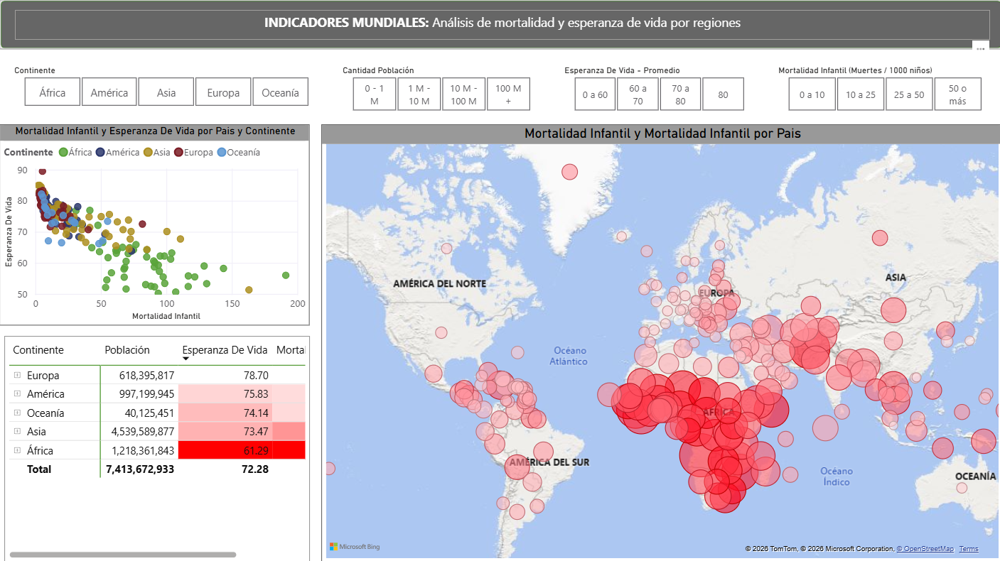
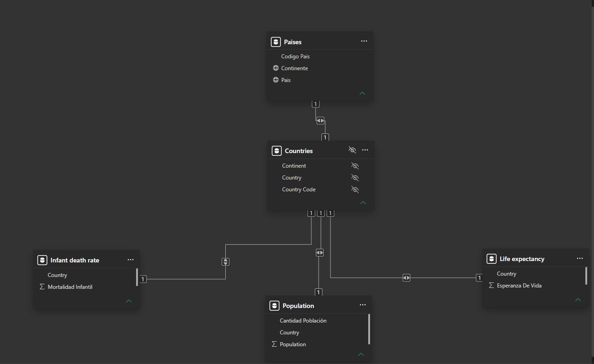

Power BI · DAX · Modelado
Población por país y continente
Vista general
Objetivo del proyecto
Se busca realizar una integración de las fuentes de datos proporcionadas que nos sumarice información clave por medio de mapas y gráficos interactivos en dos reportes:
- Población por país y continente
- Indicadores mundiales de esperanza de vida y mortalidad infantil
Capturas
Paginas del reporte



Modelo
Tablas y relaciones
El modelo sigue una estructura estrella: tablas de hechos con indicadores y poblacion y dimensiones de países y continentes.
- Countries: Países, código y contitente al que pertenecen.
- Infant+death+rate: País e indice de mortalidad infantil.
- Life+expectancy: País y expectativa de vida.
- Population: País y poblacion.
Aprendizajes
Decisiones tecnicas
- Utilizar Countries como tabla intermediaria para traducir países y continentes del ingles al español. ES oculta y solo queda la relación que es necesaria.
- Ocultar columnas que sirvieron para formar la relación. Para evitar seleccionar campos incorrectos.
- Preparación de columnas nueveas mediante condiciones. Power Query.
Estado
Proyecto documentado para portafolio.
Cuando publiques el reporte con datos ficticios, agrega aqui el enlace de Power BI Publish to Web o capturas reales del dashboard.